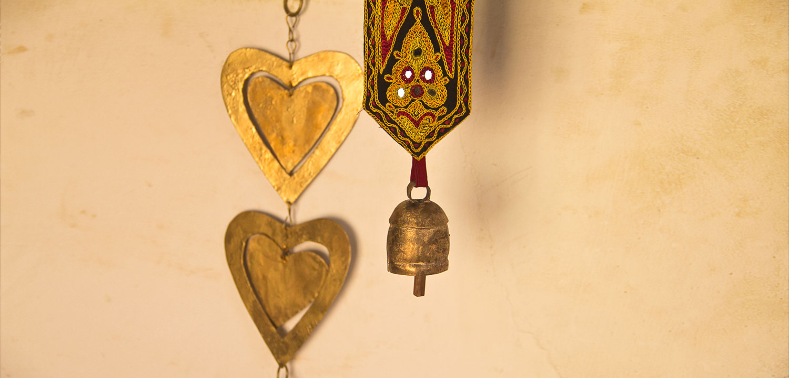

The village of Nirona, 40 km northwest of Bhuj, features several distinctive crafts (laquerwork, bell-making), but none more so than the award-winning ancient art of rogan painting, brought over from Iran 300 years ago and practiced by just one extended family in India in this village. The word rogan comes from a Persian word and means 'oil-based'. The process of making colours to apply is time consuming. Castor oil is heated on fire for about 12 hours and then cast in cold water to make it a sticky residue called the rogan. It is then mixed with stone pigments to make different colours. The artisans use a six-inch metal stick, dipped in this paint to string together designs on cloth. One can find several designs on different cloths in the cosy workshop of the village. Of these, the ‘tree of life’ piece is especially famous. These delicate, detailed cloth paintings take months of work. Prime Minister Narendra Modi famously presented one fine piece to Barack Obama during the American president's visit.
Brief History
The art of rogan is unique to this small village in the middle of Kutch, but the trajectory of the craft can be traced back to Iran. The Khatri family of Nirona is originally from Iran; their forefathers arrived here more than 300 years ago. They fortunately continued with this art form and have infused life into it over eight generations.
Rogan painting is a unique craft and practiced by very few families. Rogan painting involves the use of a thick paste which is prepared by boiling the oil of safflower, caster or linseed and pouring it into water. This paste is mixed with chalk colour pigment and a binding agent to form a thick dye. The painting on the cloth is done using astick rod or a metal block. Geometric and floral designs are the norm. Red, blue and yellow are the usual colours that are employed. Rogan printing is used for decorating wall hangings, table-cloth, curtains, sarees and skirt borders.

How to Get There?
By Road
State and private buses service the city from all major parts of Gujarat.
By Train
The railway station lies on the western railways network.
By Air
Nirona lies 40 km into Kutch, from Bhuj. Bhuj is well connected by air, rail and road. The Bhuj airport lies 4 km from the city and has ample domestic flights from major destinations in India.